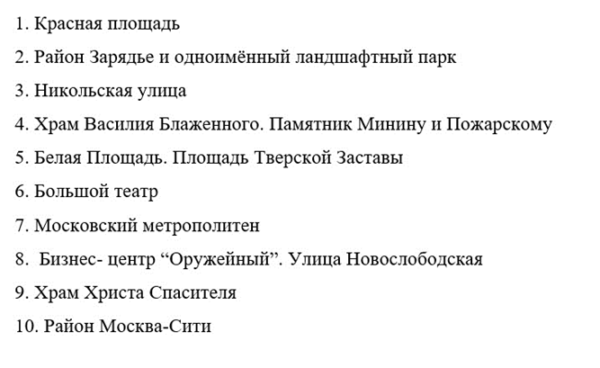
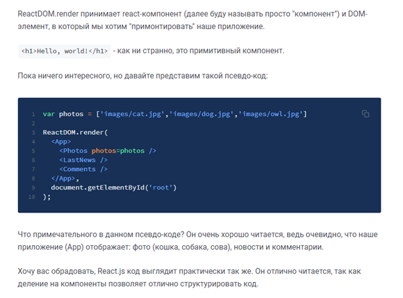

Аннотация
Проект «Гид по Москве» - приложение, позволяющее пользователю находить интересные места в столице России. Приложение основывается на открытой платформе встраиваемых кроссплатформенных приложений ВКонтакте (VK Mini Apps). В приложении используется список мест, составленный на основе анализа посещений различных мест Москвы. В процессе разработки приложения использовались следующие инструменты: фреймворк React.js, язык программирования JavaScript. Результатом работы является веб-приложение, опубликованное на платформе сервисов VK Mini Apps.
Задачи
- Сформировать список интересных мест и достопримечательностей Москвы;
- Изучить язык JavaScript и научиться работать с фреймворком React;
- Реализовать ведение Git-репозитория проекта по установленным правилам;
- Разработать шаблон мини-приложения Вконтакте «Гид по Москве»;
- Разработать документацию по проекту;
- Составить отчёт о проделанной работе;
Этапы работы
-

- Формирование списка мест
- Освоение необходимых для работы инструментов.
На основе анализа данных о посещаемости, нами был составлен список самых популярных мест Москвы. Данный список включает в себя такие объекты, как: Красная площадь, ВДНХ, Большой театр, Ходынское поле и др. Полный список объектов доступен в Git-репозитории проекта.
Для успешного выполнения поставленной задачи нам необходимо было освоить следующие инструменты разработки: язык программирования JavaScript, библиотека React.js. В течение учебного семестра нами был освоен язык программирования JavaScript и получены базовые знания для работы с React.
Планы на будущее
Поскольку на конец весеннего семестра 2020-2021 учебного года нами были освоены не все инструменты разработки, нашим планом на следующий учебный семестр остаются:
- Разработка приложения
- Оформление документации
- Публикация приложения на платформе Вконтакте
- Оформление итогового отчета о проделанной работе